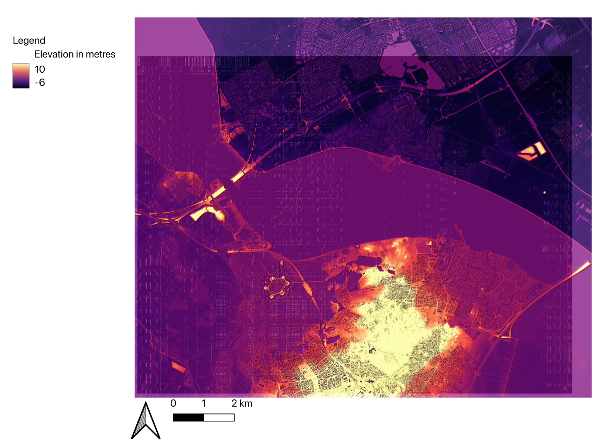

Relative Elevevation Model
Remote sensing imagery, such as Relative Elevation Models (REMs), provides valuable insights into geographic features like the Gooimeer in the case of my map. Situated as a significant body of water flowing into the IJmeer close to Amsterdam, the Gooimeer narrows as it extends inland, culminating in a particularly narrow passage before entering the IJmeer. Given its substantial water volume, concerns about frequent flooding arise. Utilizing a REM allows for detailed analysis of the surrounding infrastructure designed to mitigate flood risks around the Gooimeer. This method proves instrumental in assessing how effectively the infrastructure is engineered to withstand potential flooding events.
First, I merged six publicly available GeoTiles into one layer (available on https://geotiles.citg.tudelft.nl). Then, I created a soft light/hillshade layer for clarity. Next, I marked crosslines along the Gooimeer and used them to interpolate elevation values using TIN (Triangulated Irregular Network) interpolation. To adjust for incomplete data, I estimated values to show the gradual decrease in elevation from the Gooimeer towards the IJmeer where it meets the sea. Finally, I created a Remote Sensing Elevation Model (REM) by subtracting the TIN layer from the initial merged layer. This REM provides detailed elevation data crucial for assessing flood risks and planning infrastructure around the Gooimeer.
